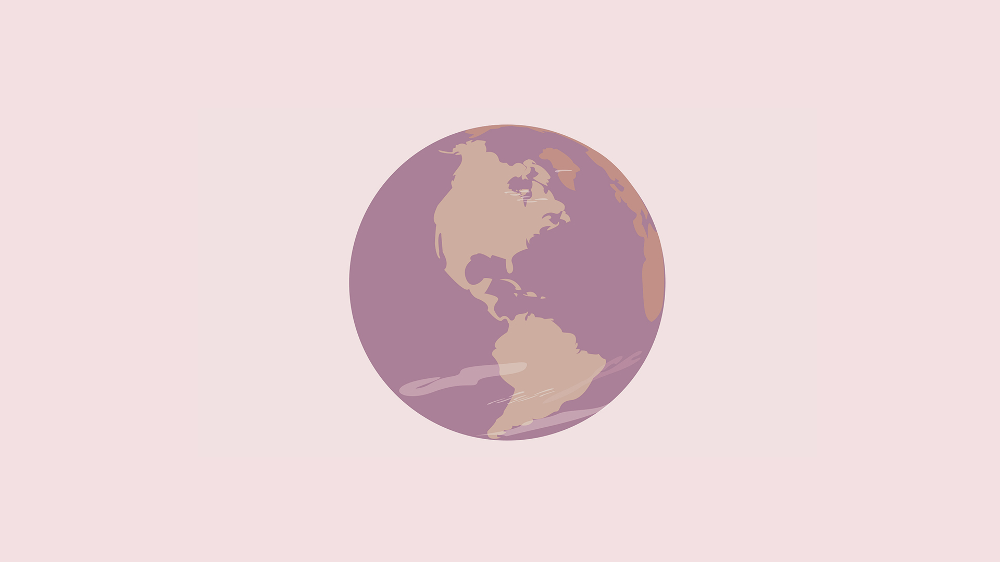

Grundläggande animation
vecka 42 - 46
Under fem veckor arbetade vi med animation var vi blev introducerade till både illustrator på javascript. Detta för att kunna använda animation till webdesign. Vi fick lära oss att visuellt designa animation men även att implementera detta i kodning. Vi fick även under detta tema arbeta med en riktig kund (Sex & samfund).